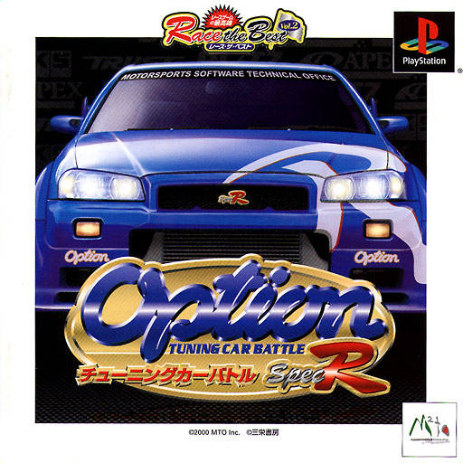

Gran Turismo 2 Concept - A redesign of Gran Turismo 2's menus and new content.
Jeeves
About Me
My name is Jeeves, I am interested in coding and game modification. This page is currently work in progress so changes will occur as I update and improve it.Tuner Archive
This page is dedicated to archiving old Tuner Websites that are either no longer online or have been significantly changed. These pages are preserved in their original form, including any outdated design choices and broken links, to provide a snapshot of the tuner scene during the time they were active.Disclaimer: The content on these archived pages may contain outdated information, broken links, and design elements that were common at the time but may not meet modern web standards. All information has been sourced from the Wayback Machine, and while every effort has been made to ensure the accuracy of the archived content, some information may be incomplete or outdated due to the nature of web archiving.
Tuner Archive
Gran Turismo 2 Concept - A redesign of Gran Turismo 2's menus and new content.

Gran Turismo 4 Poundland Edition - A modification that makes all cars cost 1CR and unlocks special colors.

Option Tuning Car Battle Research - Researching the game's internal structure and file formats.

Far Cry 2 Multiplayer Maps - A collection of maps for Far Cry 2's multiplayer mode.
Vital Skins - A collection of skins for VitalVST.
Contact
Email: it.is.jej@gmail.com